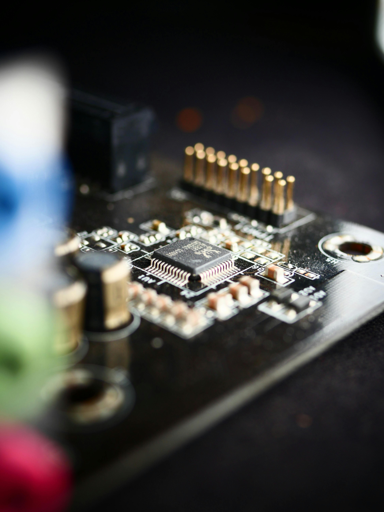

Embedded Product Development Services
I offer a comprehensive range of services to bring your electronic product ideas to life, specializing in embedded systems and microcontroller-based solutions. As a Swiss-based consultant utilizing a remote engineering model, I provide cost-effective expertise without compromising on communication or the high standards of quality.
Embedded Software Development & Firmware Engineering
Expert embedded software and firmware development for microcontroller-based systems. I create robust, efficient, and reliable software for your electronic products.

Embedded Software Capabilities:
- Microcontroller Firmware Development (C, C++, Assembly)
- Real-Time Operating System (RTOS) Integration (e.g., FreeRTOS, Zephyr)
- Device Driver Development
- Bootloaders and System Initialization
- Communication Protocol Implementation (e.g., SPI, I2C, UART, Ethernet, Bluetooth, Wi-Fi)
- Low-Power Optimization for Battery-Powered Devices
- Bare-metal and RTOS-based Development
- Software Testing and Validation for Embedded Systems
Mixed Signal Hardware Development
Complete hardware design services for electronic products incorporating both analog and digital circuits, from initial concept and schematic capture to PCB layout and prototyping.
Hardware Design Capabilities:
- Mixed-Signal Circuit Design (ADC/DAC, Amplifiers, Filters)
- Schematic Capture and Design
- PCB Layout and Routing (Multi-layer, High-speed)
- Component Selection and BOM Management
- Power Supply Design
- Sensor Integration
- Wireless Communication Module Integration (Wi-Fi, Bluetooth, LoRa, Cellular)
- Design for Manufacturability (DFM) and Design for Testability (DFT)
- Hardware Prototyping and Bring-up
ESP32 & Wi-Fi IoT Solutions
Specializing in end-to-end development of Wi-Fi connected IoT products, primarily leveraging the powerful ESP32 platform. I connect your devices to the cloud for monitoring, control, and data insights.

ESP32/Wi-Fi IoT Capabilities:
- ESP32 Firmware Development (ESP-IDF, Arduino Core)
- Sensor Integration and Data Acquisition
- Wi-Fi Network Integration and Provisioning
- MQTT, HTTP, WebSockets Communication Protocols
- Cloud Platform Integration (AWS IoT, Azure IoT Hub, Google Cloud IoT, Custom Backends)
- Secure Over-the-Air (OTA) Firmware Updates
- Low-Power Design for Battery-Operated Wi-Fi Devices
- Data Processing and Visualization
- Companion Mobile App Development (Control & Monitoring)